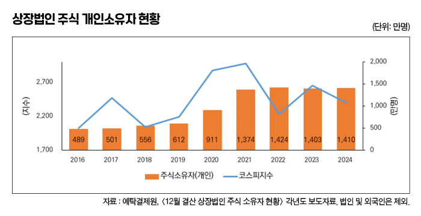
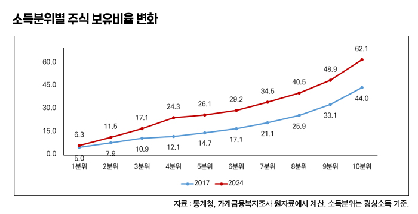
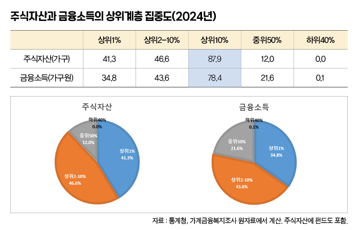
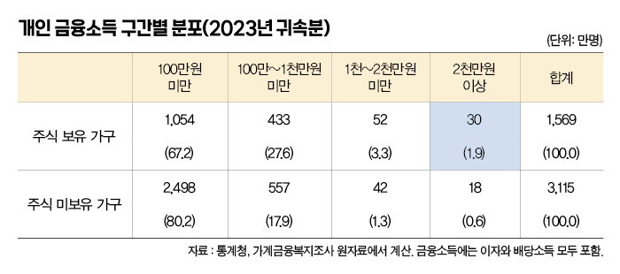

박영삼의 통계로 보는 노동
전반적 증가했지만, 고소득층 증가 주도 최상위에 더 집중 … 한도 내 체계적 지원하되 자본이득 과세완화와 뒤섞지 말아야

오늘날 각국의 노동자들은 때로는 스스로 원해서, 때로는 원치 않았지만 어쩔 수 없이 주식을 보유하고 투자까지 고민해야 하는 처지가 됐다.
우리나라 노동자는 노후대책의 유력한 목표로 삼았던 내집 마련의 꿈이 사라지면서 주식투자가 손에 잡히는 자산투자의 대안으로 급부상했다. 마침 인터넷은행들이 신사업에 뛰어들면서 앱을 통한 계좌개설과 신용대출까지 연계하면서, 젊은 세대와 일반 노동자가 주식시장에 가세하기 좋은 분위기와 환경을 조성했다. 실제로 2020년 코로나 팬데믹 상황과 함께 찾아온 저금리-강세장 분위기 속에서 IT강국 대한민국의 주식시장 참여 열기는 놀랄 정도로 뜨거웠다.
2019년 12월 612만명 규모이던 우리나라 상장법인의 개인투자자는 2020년 911만명으로 늘어났고, 2021년에는 1천374만명으로 늘어나 불과 2년 만에 두 배 이상 규모로 증가했다. 2024년말에는 1천410만명으로 15세이상 인구(4천684만명) 3명 중 1명(30.1%)이 주식계좌를 갖고있는 나라가 됐다.
통계청의 가계금융복지조사 원자료를 분석해보면 노동자의 주식보유 증가는 다양하게 확인된다. 몇 가지 사실들을 확인하고 그것이 주는 의미를 정리해 보기로 한다.

우선 노동자들의 주식보유 확대는 고소득 노동자들에게 국한된 이야기는 분명 아니다. 가구주 직업별로 보면, 예전부터 주식시장에 비교적 가깝게 있던 고용주와 전문직 종사자, 사무관리직 화이트칼라뿐만 아니라 제조업과 서비스업의 노동자들도 이러한 주식소유자 대열에 대거 합류한 것으로 나타난다.
2017년에 22.9% 수준이던 고용주의 주식보유 비율은 2024년에 37.5%로 증가했고, 화이트칼라의 같은 기간 비율은 31.7%에서 47.9%로 상승해 절반에 가까운 가구가 주식을 보유하게 됐다. 그런데 블루칼라 노동자 가구의 주식 보유 비율도 14.2%에서 25.5%로 크게 증가해 자영업(28.2%)과 거의 비슷한 수준을 이루게 됐다.
하지만 소득분위별로 구분해서 보면 고소득층일수록 주식보유 비율이 더 큰 폭으로 상승했고, 소득이 낮아질수록 상승폭도 적었던 것으로 나타난다. 최하위 저소득층에서는 거의 변화가 없거나 한자리 수 정도의 낮은 증가율을 보였다.
다음으로 주식투자의 저변이 크게 확대됐지만 소유집중이 심한 자산시장의 본질과 특성은 거의 변하지 않았다. 주식자산의 집중도가 그 중에서도 특히 심하고 주식에서 파생되는 금융소득의 집중도도 가장 심한 편이다. 경상소득 기준으로 2023년 상위 10%의 소득점유 비중이 29.3%인데, 총자산의 상위 10% 점유 비중은 43.0%에 달한다. 주식자산의 경우 이보다 훨씬 더 심해서 상위 1%의 자산비중이 41.3%에 달하고 상위 10%까지 합치면 전체 주식자산의 87.9%를 가진 것으로 나타난다. 그리고 자산에서 발생하는 이자와 배당 등 금융소득도 상위 1%의 점유비중이 34.8%에 이르고 상위 10%의 비중은 78.4%에 달한다.

한편 금융소득이 2천만원을 초과하는 경우 종합과세 대상이 되는데, 가계금융복지조사 분석 결과 여기에 해당하는 가구원은 2023년 귀속분을 기준으로 30만명으로 1.9%만이 해당되고, 앞으로 배당소득 증가로 종합과세 대상에 포함될 가능성이 있는 1천만원 이상 소득자도 52만명 3.3% 수준에 그치고 있다. 주식을 가진 1천569만명 가구원 가운데 94.8%가 기존 제도 하에서의 배당소득 과세로 인한 영향은 거의 받지 않는 상태인 것이다.
지금까지 살펴본 것처럼 일반 노동자들의 주식보유가 크게 늘어난 것은 분명한 사실이다. 주가 상승에 대한 기대와 단기 차익실현의 욕구가 없다고는 할 수 없지만, 근본적으로는 미래에 대한 불안이 원인이 되어 자산 형성을 통해 미래 대비에 나선 것이라고 말할 수 있다.

하지만 이것을 계기로 자본소득에 대한 과세 완화가 다수의 노동자에게도 이득이 될 것이라는 믿음을 유포하는 것은 올바른 일이 아니다. 실제로는 부유층의 세금 부담만 줄이고 나라 전체의 발전과 복지에 사용될 재정 기반을 약화시킬 위험이 크다.
노동자들과 젊은 층의 노후 대비 목적의 주식 보유에 대해서는 어차피 무거운 세금을 매길 대상도 아닌데다 일정 한도 범위 내의 소규모-장기투자에 대한 비과세 등의 지원방식을 체계적으로 제도화하는 것이 훨씬 더 바람직한 방법이다. 공적연금과 퇴직연금, 그리고 개인들의 주식 보유를 안정적인 투자경로와 방법으로 연결할 수 있는 ’사회정책적 자본시장 정책’이 필요한 때가 아닌가 한다.
고려대 노동문제연구소 노동데이터센터장 (youngsampk@gmail.com)
